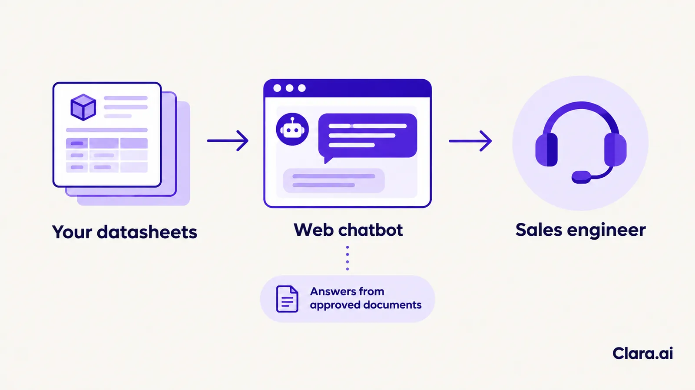
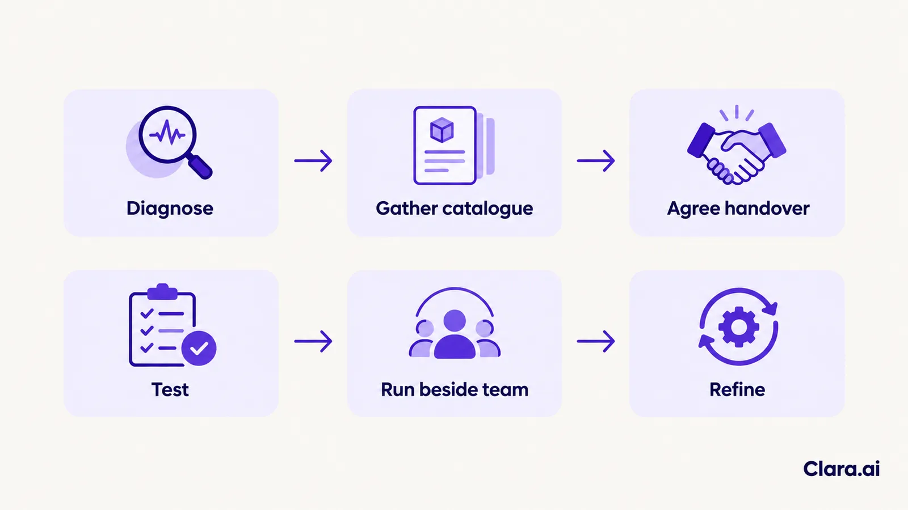

An AI web chatbot for industrial product catalogue support answers buyers' technical questions on your website, using your own datasheets and product tables. It narrows a large range to the right model, replies at any hour, and passes quote requests and unclear questions to a sales engineer with the full conversation attached.
Picture a plant engineer in Ohio at 9 pm. She is replacing a failed sensor on a furnace line and needs a matching part by Monday. The supplier's website offers PDF datasheets, a search box that only recognises exact part numbers, and a contact form that goes to an inbox nobody will read until morning. She closes the tab and opens the next supplier's site.
That is the everyday cost of a large catalogue. The range is deep, the questions are technical, and the person asking cannot always wait for office hours. This article explains how an AI web chatbot closes that gap, what it should and should not answer, and where your sales engineers stay in charge.
Industrial catalogues are built for people who already know the part number. Most enquiries start earlier. The buyer has an application, a set of operating conditions and a deadline, and needs someone to translate those into a model.
Three things block them.
Time zones add to it. A buyer in Vancouver is still working when an Ontario sales team has been offline for three hours.
Buyers type the way they speak. A question arrives as "Which probe survives a dusty kiln?", not as a part number.
A catalogue support chatbot does five jobs on your website.

The buyer gets a useful reply at 9 pm. The engineer starts the next morning with a qualified enquiry and the application already written down.
The work starts with the catalogue, not the chatbot. Datasheets and product tables are collected first, then checked for places where models overlap or where documents disagree.
That check matters. Two models can look alike in a table and differ in a footnote. A chatbot that merges them gives a confident wrong answer, which is worse than no answer. So each model's own document is treated as its single reference.
Past enquiries are just as useful. They show the words buyers actually use, the questions that come up every week, and the points where a person always has to step in. The careful work is in preparing the data. The chatbot itself comes after.
Only if it is built to say "I do not know". When you assess any vendor, insist on three things.
Your sales engineers stay in charge of three things: price, custom requirements, and any answer with a safety or compliance consequence.
The handover is part of the design, not a fallback. When a buyer asks for a quote, the chatbot stops answering and passes the conversation to a named person. The engineer receives the application, the models discussed and the contact details. Nobody asks the buyer to repeat themselves.
Engineers also review the chats. Questions the bot could not answer show where the documents have gaps. Those gaps are fixed in the source material, and the bot improves from there.
Speed is where the commercial case sits. A Harvard Business Review study of 1.25 million sales leads found that firms responding within an hour were nearly seven times as likely to qualify a lead as firms responding an hour later, and more than 60 times as likely as firms that waited 24 hours or longer. The study covered web leads in general, not catalogue questions, so treat it as direction, not a forecast.
For a measured before-and-after, there is a case from a different industry and channel. KISNA Diamond & Gold, a jewellery retailer, runs a WhatsApp AI chatbot called KIA, built by Clara.ai. It is not a web chatbot and not an industrial case. It does show what happens when the first reply moves from hours to seconds.
The channel differs, but the principle carries over: reply at once and qualify during the conversation.
The chatbot is the front door, not the whole building.
Some buyers would rather phone than type. An AI calling agent can pick up after-hours calls, ask the same short qualifying questions and log the enquiry, so voice and web feed one list.
An operations intelligence dashboard sits behind both. It can show what buyers ask, which models draw the most questions, how quickly enquiries are answered and where handovers pile up. That tells product and sales teams what the catalogue fails to explain.
Some export distributors prefer chat on their phones. A WhatsApp chatbot for business can run from the same assistant, which then serves web and WhatsApp as one. For US and Canadian buyers, the website stays the main channel.
Clara.ai builds, deploys and manages AI chatbots, AI calling agents and operations dashboards, and works with 19 active enterprise clients across 12 industries, in India and the Gulf.
